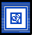

Template: Tool Guidelines
 Tool Guidelines Templates |
Template for
the set of tool guidelines (RUP
Artifact: Tool
Guidelines) required to support the process
configuration.
Note: Tool Guidelines are made up of a number of individual Tool Mentors. |
| Tool: | Microsoft® FrontPage™ or Microsoft® Word™. |
| Template: | HTML Template: Tool Mentor |
| Specialization: | |
Templates
This web site contains a Development Infrastructure section (click here to view the section) which includes the tool guidelines required to support the process configuration. Each tool guideline is made up of a number of individual tool mentors each of which explains how to use the tools when undertaking a specific activity.
Any additional, or missing, tool mentor pages for your process configuration can be created using the Tool Mentor Template. To ensure proper creation the document should be created from inside Microsoft® FrontPage™. Follow the link below for a look at the template:
HTML Template: Tool Mentor (opens in a new window)
The guidelines should be presented as part of the process configuration. The templates for these artifacts are less important than the majority of the other artifact templates as they are not instantiated by the projects.
Related Templates
Artifact guidelines are also required. See Template: Guidelines.
For an overview of all the templates available to the environment work flow see Templates: Environment.
Examples
See the various RUP Tool Mentors.
Related Examples
None.